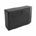
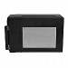
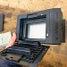
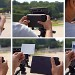
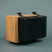
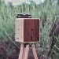
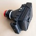

Séquence 36 : Concevoir son appareil photographique.
Compétences Du Programme (Cycle 4) :
- CT 2.6 Réaliser, de manière collaborative, le prototype de tout ou partie d’un objet pour valider une solution.
- CT 3.2 Traduire, à l’aide d’outils de représentation numérique, des choix de solutions sous forme de croquis, de dessins ou de schémas.
Situation déclenchante






Etre constitué de :
Le collège a reçu un accessoire spécial : un dos photo instantané.
Quand on le fixe derrière un appareil photo, il permet d’obtenir directement une photo qui sort sur du papier, comme les appareils Polaroid ou Instax.
Par groupes, vous devez imaginer et fabriquer un nouvel appareil photo “fait maison” autour de ce dos instantané.
Votre appareil devra :
Quand on le fixe derrière un appareil photo, il permet d’obtenir directement une photo qui sort sur du papier, comme les appareils Polaroid ou Instax.
Par groupes, vous devez imaginer et fabriquer un nouvel appareil photo “fait maison” autour de ce dos instantané.
Votre appareil devra :
- Se fixer correctement sur le dos instantané (sans laisser passer la lumière).
Etre constitué de :
- Un objectif.
- Une chambre noire (boîte fermée, peinte en noir à l’intérieur).
- Un système pour ouvrir et fermer l'objectif (obturateur très simple).
Permettre d’obtenir une vraie photo instantanée lisible.
Problématique : Comment concevoir une pièce pour réparer, remplacer ou créer un objet technique ?
- Hypothèses : [Chaque élève rédige ses hypothèses dans son cahier]
Travail à faire
Par groupes, vous devrez :
- Observer le dos instantané et identifier les contraintes (où se trouve le papier, où arrive la lumière, comment il se fixe).
- Rédiger un mini cahier des charges avec :
- La fonction principale (prendre une photo instantanée).
- Les contraintes (étanchéité à la lumière, solidité, simplicité d’usage, sécurité).
- Proposer au moins deux idées de forme d’appareil (croquis, schémas simples).
- Choisir une solution et :
- Dessiner un plan de la chambre noire et du sténopé.
- Décider du type d’obturateur.
- Réaliser un prototype (en carton ou autre matériau) et le tester avec le dos instantané lors d’une séance encadrée.
- Activité 1 : s36-fiche-activite1-eleves.pdf
Exemples





Exemple d’appareil photo rudimentaire utilisant le standard Graflok
Ressources GRAFLOCK :
Concevoir une ou plusieurs pièces qui permetront de maintenir le "LomoGraflok 4×5 Instant Back" en place sur votre appareil photo.

{kind=link}
{kind=link}
{kind=link}
{kind=link}
Structuration des connaissances :
Structuration 1 : DIC 2.1 _ Réaliser, de manière collaborative, le prototype de tout ou partie d’un objet pour valider une solution
Structuration 2 : OTSCIS 2.2 _ Lire, utiliser et produire, à l’aide d’outils de représentation numérique, des choix de solutions sous forme de dessins ou de schémas.